Clear optics --- Solution
X23 (2023) — English translation
A1Measure the focal lengths $f$ and $F$ by taking the image $A'$ on the screen. Use $H \approx 1.20~\text{m}$ to measure. On the answer sheet, indicate with a cross the correspondence between the color of the lens and the names $L_f$ and $L_F$.0.20
Let's use the thin lens formula \[ \frac{1}{a} + \frac{1}{H-a} = \frac{1}{f} \] For each lens we will make two measurements.
White Lens: Near Focus: $H =124.2 \: cm, \quad a = 7.3 \: cm \quad \Rightarrow \quad f = 6.9 \: cm$ Far Focus: $H =124.2 \: cm, \quad a = 116.5 \: cm \quad \Rightarrow \quad f = 7.2 \: cm$
Blue Lens: Near Focus: $H =124.5 \: cm, \quad a = 18.0 \: cm \quad \Rightarrow \quad F = 15.4 \: cm$ Far Focus: $H =124.2 \: cm, \quad a = 103.2 \: cm \quad \Rightarrow \quad F = 17.4 \: cm$
B1Align the lens so that $a = a_0 + F/2$. In further paragraphs we will study the characteristic size of such images, so choose which linear size - height $h$ or width $w$ of the fuzzy image you will measure in subsequent paragraphs. Justify your choice and mark it with a cross on your answer sheet. This size will be designated $p$.0.20
The blurriness of the edge of the spot is related to the linear size of the source, so we will measure the width.
B2Cover the part of the lens facing the screen with an aperture of diameter $D$. For all apertures, measure the image size $p$.0.45
B3Plot the dependence $p(D)$.0.40
The graph shows a weak nonlinearity at the edges of the lens - an upward convexity.
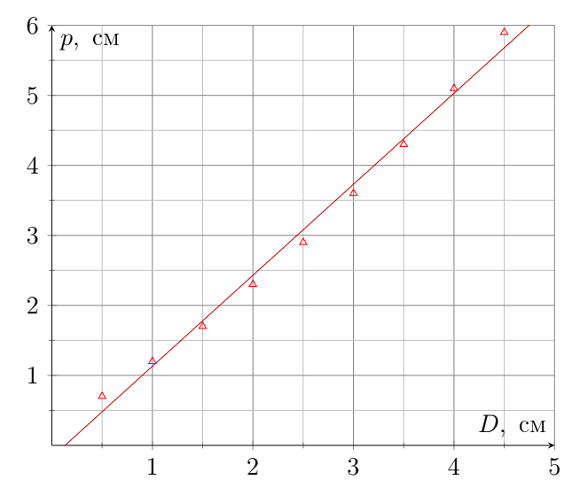
B4With the same arrangement of objects, remove the aperture from the lens and measure the size $p_0$ of the image on the screen. Determine the diameter $D_0$ of the open part of the lens based on $p_0$, compare the result with direct measurements.0.10
Linear dependence coefficients: $p = -0.17~\text{cm} + 1.3 \cdot D$. At the same time $p_0=7.0~\text{cm}$. From this dependence $D_0 = 5.5~\text{cm}$. From direct measurements $D_0=5.2~\text{cm}$
B5With $11$ different $a$ in the range $[a_0-F/3,a_0+F/2]$, measure the size $p$ of the image on the screen.0.55
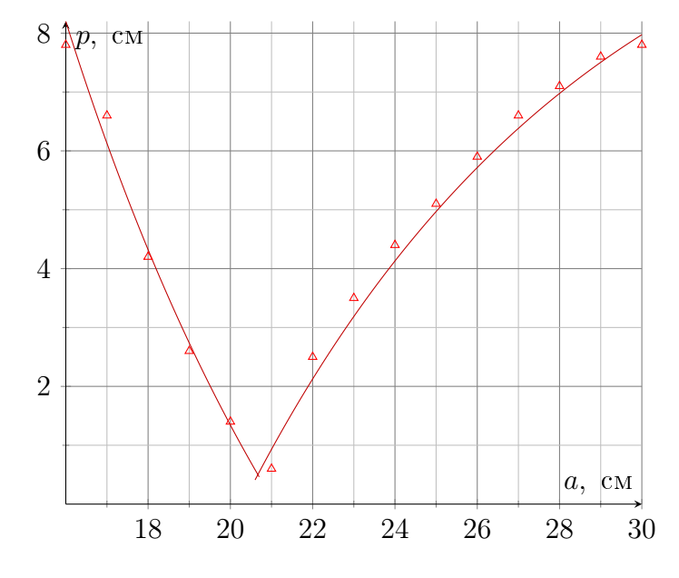
B6Construct a linearized graph of $p$ versus $a$. From the graph, find the focal length $F$ and compare it with the one obtained earlier. Consider the filament to be $0.10~\text{cm} \times 0.30~\text{cm}$ in size.1.30
From the thin lens formula \[ \frac{1}{b} + \frac{1}{a} = \frac{1}{F} \quad \Rightarrow \quad b = \frac{Fa}{a-F},\] and the size $w'$ of the image $A'$ is $W_A \frac{b}{a}$ and does not depend on the focus on the screen. At $a > a_0$ the boundary of the image on the screen is determined by the ray passing through the opposite edge of the lens. From geometry: \[ \frac{w - w'}{H-a-b} = \frac{D+w'}{b} \] Through transformations we obtain: \[ w = W_A \frac{H-a}{a} + D \frac{a^2-aH+FH}{aF} \]
Case $a>a_0$
At $a > a_0$ the boundary of the image on the screen is determined by the ray passing through the near edge of the lens. From geometry: \[ \frac{w - w'}{a+b-H} = \frac{D-w'}{b} \] Through transformations we obtain: \[ w = W_A \frac{H-a}{a} - D \frac{a^2-aH+FH}{aF} \]
Linearization: \[ (aH-a^2) = \pm \frac{F}{D} \left( wa - W_A (H-a) \right) + FH \]
Coordinates $X_1=wa-W_A(H-a)$, $Y_1=aH - a^2$,
Answer: $F$ can be obtained from the graph in four ways. For the red line, from the free term equal to $FH$ it follows that $F=17.0~\text{cm}$, from the slope coefficient equal to $F/D$ it follows that $F=15.7~\text{cm}$. For the blue line, the free term equal to $FH$ implies that $F=17.3~\text{cm}$, and the slope coefficient equal to $-F/D$ implies that $F=17.2~\text{cm}$.
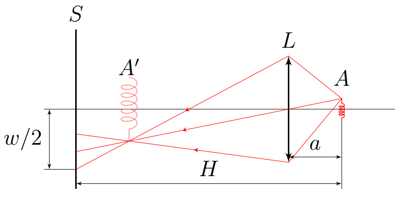
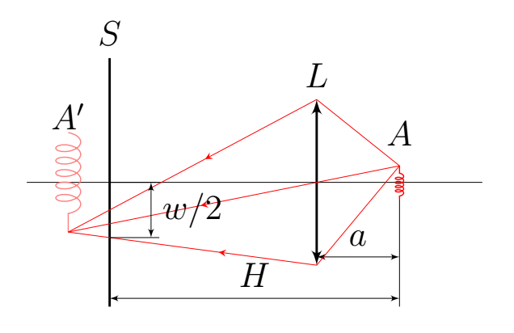
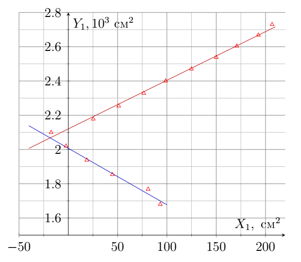
B7Position the lens so that $a = a_0 + 2F/5$. Draw the border of the image on graph paper. Label the center of the image, the horizontal axis $x_S$ and the vertical axis $y_S$.0.30
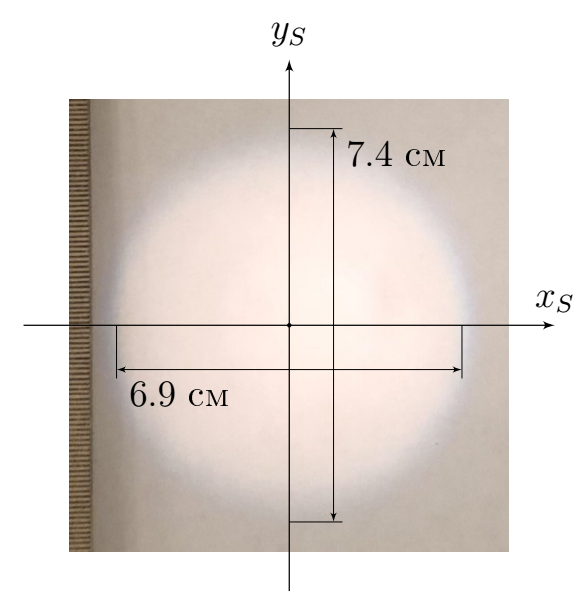
B8Calculate the position of the boundary $\Gamma$ of the image relative to its center at $11$ points lying in the area $x_S > 0$, $y_S > 0$. Place these dots on the same sheet of graph paper where you sketched the image.0.80
The green rectangle is the outline of the helix that would be visible at a very small aperture.
The gray contours indicate the contour of the spot from a point source (lower estimate) and the contour from a rectangular source.
The points lying in the middle between these curves are indicated in red - these points are the theoretical boundary.
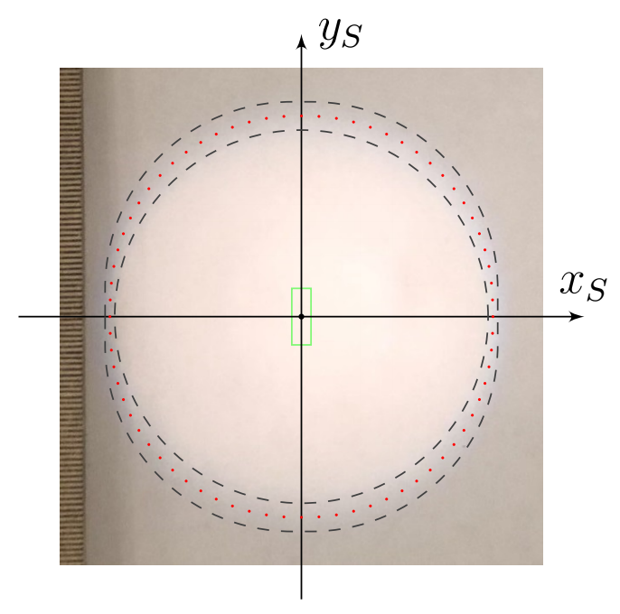
C1On your answer sheets, place a cross next to the true statements.0.06
Answer: $L_F$ Border blue at $ a < a_0$, red at $a > a0$ $L_F$ Border red at $ a < a_0$, blue at $a > a0$ $\times$ $L_f$ Border blue at $ a < a_0$, red at $a > a0$ $L_f$ Red border for $ a < a_0$, blue for $a > a0$ $\times$
C2On your answer sheets, mark the cross next to the true statements about $n_\text{b}$ and $n_\text{r}$. Justify your choice.0.50
As can be seen from the experiment, at $a > a_0$ the image boundaries are blue, it follows that blue rays are focused closer ($b_b < b_r$), which implies \[ \frac{1}{b_b} > \frac{1}{b_r} \quad \Rightarrow \quad \frac{1}{F_b} > \frac{1}{F_r}, \] which implies the answer from the grinder formula: \[ \frac{1}{F} = (n-1) \left( \frac{1}{R_1} + \frac{1}{R_2} \right) \]
Answer: $L_F$ $n_b > n_r$ $\times$ $L_F$ $n_r > n_b$ $L_f$ $n_b > n_r$ $\times$ $L_f$ $n_r > n_b$
D1With $7$ different $H$, measure the image size $p$ under close focus conditions.0.70
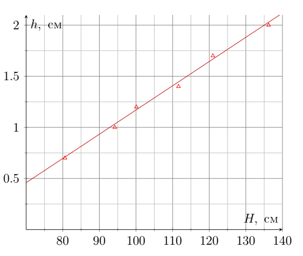
D2Linearize the dependence of $p$ on $H$ and plot it. Calculate the source parameters $W_A$ and $H_A$, making additional measurements if necessary.0.55
The height of the focused image $h$ is expressed through the height of the spiral $H_A$: \[ \frac{H_A}{a} = \frac{w}{H-a}. \] Let us find $a$ from the thin lens formula: \[ \frac{1}{a} + \frac{1}{H-a} = \frac{1}{F} \quad \Rightarrow \quad a^2-aH+FH=0 \] Of the two roots, we are interested in the smaller $a = \frac{1}{2} \left(H- \sqrt{H^2-4FH} \right)$. In this case, the dependence of $h$ on $X_2$ turns out to be linear with the slope coefficient $H_A$, where \[ X_2= \frac{H+\sqrt{H^2-4FH}}{H-\sqrt{H^2-4FH}}\]
Coordinate $X_2=\frac{H+\sqrt{H^2-4FH}}{H-\sqrt{H^2-4FH}}$.
Answer: From the slope coefficient of the graph $H_A=0.37~\text{cm}$. Let's measure the ratio $\frac{H_A}{W_A}$ from the enlarged image: $\frac{H_A}{W_A} = \frac{3.1~\text{cm}}{1.0~\text{cm}}$, which means $W_A=0.12~\text{cm}$.
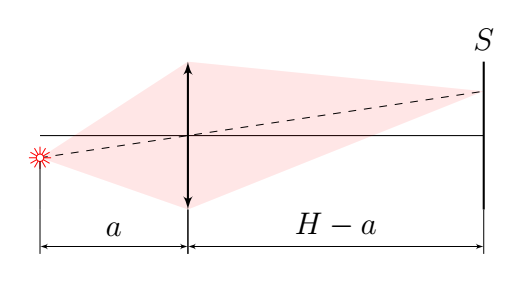
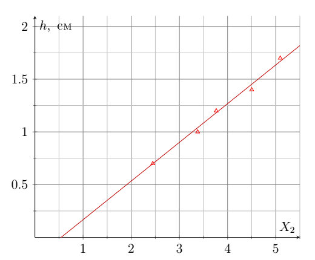
D3Count the number of $N_A$ spirals in the source spiral.0.10
Answer: Let's look at the image on the screen enlarged with a lens, and we will also use the aperture to reduce blur due to aberrations. \[N_A = 18\]
E1For various fixed values of $a$, select distances $l$ that correspond to a clear image. Measure the height of the clear image $h$. If several different values of $l$ produce several clear images, then select the image with the larger $h$. The dependence of $h$ on $a$ has a characteristic point, describe it and measure its surroundings especially carefully. Take at least 15 measurements in total.0.85
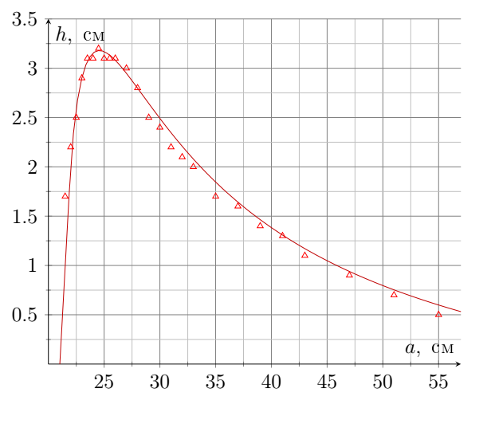
E2Obtain a theoretical formula for the dependence of $h$ on $a$. Construct a linearized graph and show that the theoretical formula is valid.1.74
Thin lens formulas: \[ \frac{1}{a} + \frac{1}{b} = \frac{1}{F} \quad \Rightarrow \quad b =\frac{aF}{a-F},\] \[ \frac{1}{x} + \frac{1}{L_1-x} = \frac{1}{f}, \quad L_1=H-a-b \] We obtain the equation for $x$ from the second thin lens formula: \[x^2 - xL_1 - fL_1 =0,\quad \mathcal{D}=L_1^2-4fL_1,\quad x_{1,2} = L_1\frac{1\pm \sqrt{1- \frac{4f}{L_1}} }{2}.\] With a smaller $x$ the image is larger, so we choose the root with a minus. Now let's express the height $h$ of the image $A''$, let the height $A'$ – $h'$. From similar triangles: \[ \frac{H_A}{a} = \frac{h'}{b}, \quad \frac{h'}{x}=\frac{h}{L_1-x}.\] As a result, \[h = \frac{L_1-x}{x} \frac{b}{a} H_A = \frac{1+ \sqrt{1- \frac{4f}{L_1}}}{1- \sqrt{1-\frac{4f}{L_1}}}\frac{F}{a-F} H_A,\] where $L_1 = H-a-\frac{aF}{a-F}$. Thus the linearization of $h$ from $X_3$, where \[ X_3 = \frac{1+ \sqrt{1- \frac{4f}{H-a-\frac{aF}{a-F}}}}{1- \sqrt{1-\frac{4f}{H-a-\frac{aF}{a-F}}}}\frac{F}{a-F}.\]
Answer: The slope coefficient of the graph is $k=0.35~\text{cm}$, which fully corresponds to $H_A$ obtained in other points.
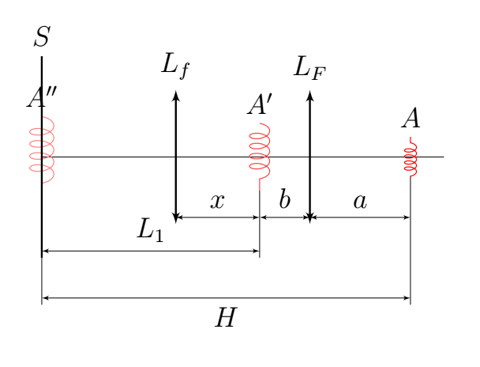
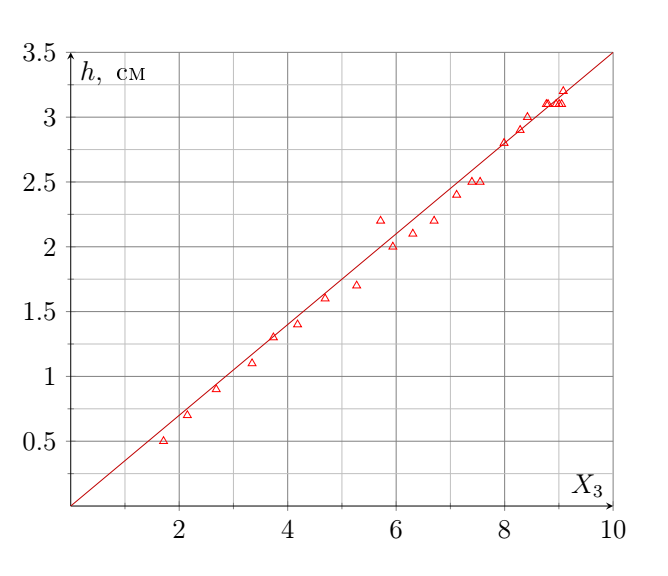
E3Adjust the Kepler telescope so that the distance between the lens $L_f$ and the ruler is $H\approx1.20~\text{m}$, and through the telescope you can clearly see the magnified image of the ruler. Make the necessary measurements and calculate the experimental magnification value $\Gamma_K$ of the Kepler telescope in such a system.0.80
The magnification of the Kepler telescope can be estimated by comparing the visible image of the ruler with another known size. For example, stick two strips of masking tape onto the plastic frame of the lens. The photograph shows the process of such measurements.
Answer: From distance $L_\Gamma=33~\text{cm}$ we see that the slot thickness $h_\Gamma=21~\text{mm}$ corresponds to $H_\Gamma=23~\text{mm}$ on the ruler. The distance between the ruler and the lens is $H=118~\text{cm}$. So the increase $\Gamma$ can be found like this: \[ \Gamma = \frac{h_\Gamma}{L_\Gamma} \cdot \frac{H+L_\Gamma}{H_\Gamma} = 4.2 \]
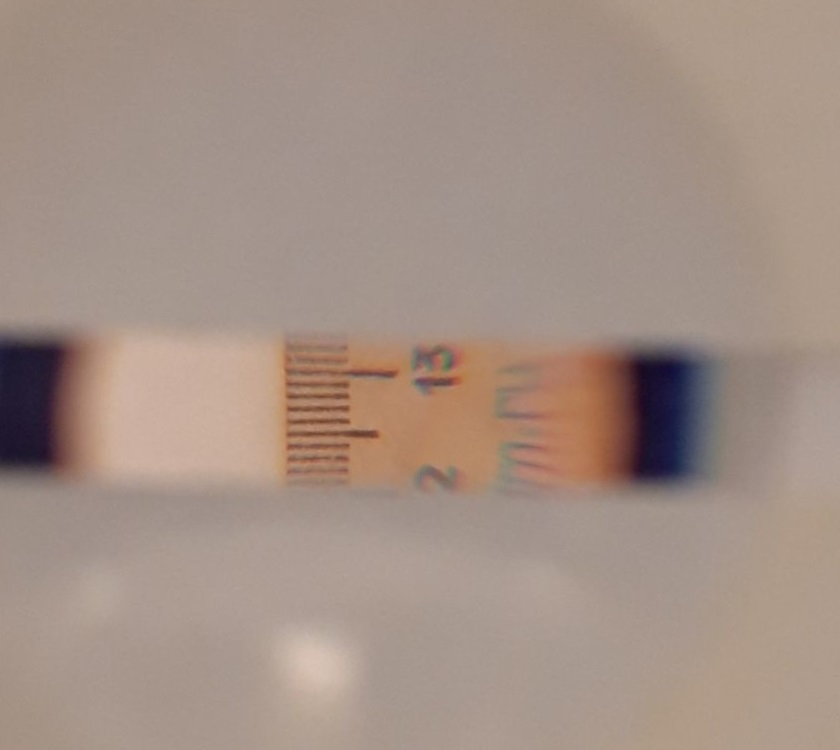
E4Observe the distortion of the ruler image at the edges of the telescope's field of view. Draw an image of the ruler as seen through the Kepler telescope. Show both chromatic and spherical aberrations in the figure.0.40
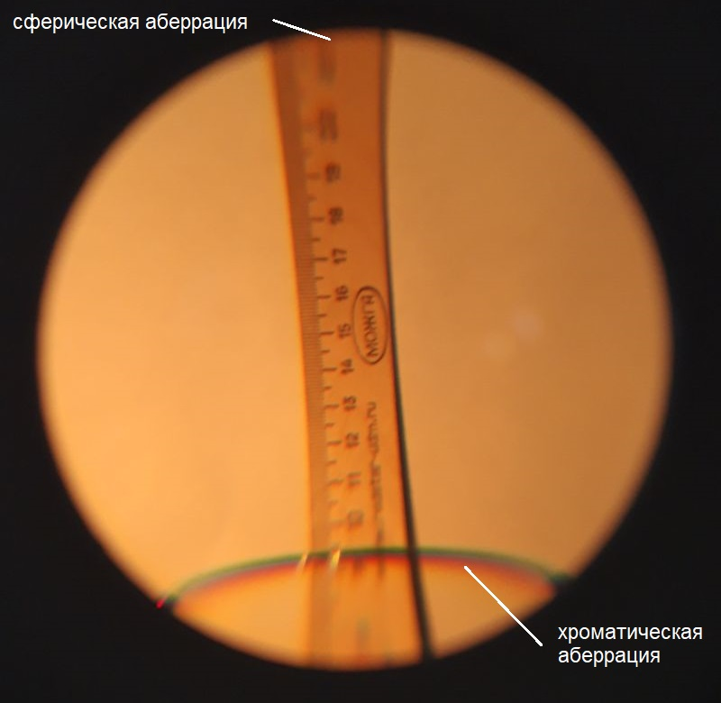